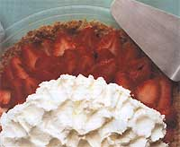
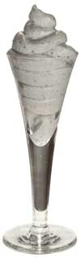

If you've been growing fruit every summer for as long as you can remember, then you know better than anyone that fruit really is a dessert all by itself. Sweet and juicy-fresh summer fruit can be peeled and sliced or eaten whole with the juice running down your chin. Loaded with vitamins and fiber, seasonal fruit is nature's perfect dessert - a sweet you can sink your teeth into without feeling guilty. Unfortunately, it is true that "we are what we eat," and that we'd prefer not to wear our dessert. Although our minds agree with this, that nagging sweet tooth sometimes isn't satisfied with a plain bowl of sliced fruit. Fortunately, fruit desserts can be low in fat and sugar (fruit is already a natural sweetener), so it is possible to keep that sweet tooth happy.
Baked fruit desserts Fruit crisps and cobblers are easy to prepare on a hot summer day and they're a good way to use up that flat of blueberries before the mold descends. If you find yourself stuck with a few plums, nectarines, and berries, try combining the fruit for an interesting crisp. Too often baked fruit desserts call for large amounts of sugar, which is entirely unnecessary if the seasonal fruit is ripe and sweet. If the ripened fruit is slightly bitter, drizzle a few tablespoons of honey, maple syrup, or fruit juice con centrate over the sliced fruit before adding the topping.
Unfortunately some recipes for baked fruit desserts are high in fat, with pie at the top of the list. Who wants to roll out pie crust on a humid 98 degrees day anyway? Crisps and cobblers are no sweat and don't need to be baked for as much time as pies do. This means the fruit won't be overbaked and mushy. (Frozen fruit should be kept frozen until it's time to bake.) You can slightly reduce the fat (whether it's butter or oil) in your favorite cobbler or crisp recipe without a noticeable difference. Also, try using more fruit for an almost deep-dish cobbler or crisp so that a single serving contains less topping.
Unfortunately, most baked fruit desserts have an undesirable glue-like filling. There's nothing wrong with some of the fruit's juices sitting on your dessert plate. However, if the fruit juice isn't thickened slightly, the cobbler crust will sink, transforming into a dumpling and losing its crispness. I toss the fruit with one to two teaspoons of arrowroot flour (which can be purchased at health-food stores) that thickens the juices without a cornstarch aftertaste. Also, some fruit is too juicy to be used for baking. Instead of using peaches, which become watery and mushy when baked, I use nectarines mixed with berries.
Raw fruit desserts: Once fresh fruit is sliced, it deteriorates quickly. It will start to turn brown and begin to lose some of its vitamins and texture. Slice the fruit just before serving or, if you must, cut it up a little ahead of time and sprinkle or dip the fruit slices into fresh lemon juice. The skin should be left on most fruit because of its high fiber content and the nutrients located just under the skin. Fresh fruit can be eaten in a bowl by itself, sprinkled with a liqueur, or topped with plain yogurt mixed with chopped crystallized ginger (which can be purchased in the Asian-foods section of supermarkets).
Breakfast Berry Cobbler
This cobbler is cakelike and makes a wonderful Sunday morning coffeecake.
2 cups mixed berries - not strawberries (I use one cup blueberries, one cup pitted and halved sweet cherries.
½ teaspoon cinnamon
1 teaspoon arrowroot flour
1 tablespoon lemon juice
¼ cup oil or melted butter
¼ cup real maple syrup
¼ cup low-fat milk
1 large egg
1 teaspoon vanilla
1 teaspoon lemon rind, grated
1 cup whole-wheat pastry flour (or unbleached white flour), sifted
1½ teaspoons baking powder
¼ cup sliced almonds
Preheat oven to 350 degrees. Mix cinnamon and arrowroot flour together. Toss with berries and lemon juice; set aside. Beat together all wet ingredients, plus lemon rind. Add flour and baking powder; beat briefly.
Pour half of batter into greased 8" or 9" cake pan, and spoon fruit onto dough. Pour rest of batter on top of fruit. Sprinkle almonds around edges. Bake for 45 minutes until top is medium brown and an inserted toothpick comes out clean. Let cool; cut into pie-shaped wedges.
Blueberry - Raspberry Cobbler
A food processor works best for this easy topping. If you don't have one, use a pastry blender. If you're using frozen fruit, defrost just enough to break up the berries.
3 to 4 cups blueberries (fresh or frozen)Mix together cinnamon and sugar and sprinkle on top. Bake until topping is brown (close to 40 minutes). Make sure dough is done underneath. Let cool for at least 10 minutes. Serve with vanilla frozen yogurt or low-fat ice cream.
Fruit Crisp
4 nectarines, skins left on
4 plums, very ripe
1 cup blueberries
2 tablespoons lemon juice
1 teaspoon arrowroot flour
¼ teaspoon ginger
Topping:
¼ cup whole-wheat flour or whole-wheatpastry flour
¼ cup brown sugar
3 tablespoons frozen margarine or butter
1 cup oats
? cup chopped pecans (optional)
Preheat oven to 375 degrees. Stir together arrowroot flour and ginger. Pit and slice plums and nectarines. Toss all fruit together with arrowroot flour and pour into a 9" square pan. In food processor (or use pastry blender) pulse flour, sugar, butter, and cinnamon until crumbs are pea-sized. Don't overmix. Add oats (and nuts) and pulse in processor a few times. Sprinkle topping over fruit. Bake 20 to 25 minutes until topping is lightly browned. Let cool slightly before serving.
Melon Mousse
Riper melons are always sweeter, although often mushier. This mousse is a good way to use up a ripe, mushy melon for a tasty, low-fat dessert.
1½ envelopes Knox unflavored gelatin (about 1¾ tablespoons)
2 tablespoons lemon juice
2½ cups cubed muskmelon or cantaloupe
1 tablespoon sugar
½ cup low-fat lemon yogurt
fresh berries (optional)
In small saucepan, sprinkle gelatin over lemon juice and let soften for one minute. Heat over low heat, stirring constantly until dissolved completely (approximately one minute). In blender, puree melon, gelatin mixture, and sugar until well blended. Pour into bowl and whisk in yogurt. Chill in shallow bowl or dessert glasses for at least three hours. Top with fresh berries and serve.
Oat-Bran Pie Crust
This is an easy, low-fat, high-fiber crust that my mother invented because she hates rolling out pie crust as much as I do. You can press the crust into a pie pan with your fingertips and use it as a shell for fresh fruit. Or crumble the crust on top of fruit with some frozen yogurt.
1½ cups oat bran
¼ cup apple cider or juice
3 tablespoons oil (walnut has a nice fla vor, but any mildly flavored oil will do)
½ teaspoon cinnamon
½ teaspoon vanilla (or almond extract if using a peach filling)
raw sugar
Preheat oven to 350 degrees. Mix all ingredients together with a fork in a 9" pie pan. Pat mixture flat in bottom of pan with fingers, and extend gently and evenly up the sides. (Add a little more juice if crust is too dry - oat bran varies in its absorbency of liquids.) Sprinkle with raw sugar. Bake for 20 to 30 minutes until crust turns golden brown. Let cool. If using only part of the shell, cut crust into wedges, place wedge on plate, and fill with fresh fruit or frozen yogurt. Or, crumble crust and sprinkle over fruit and yogurt.
|
 HORIZON PHOTOGRAPHICS Fruit pies don't have to be high in fat. With a few substitutions, you can whip up a low-fat crust that's high in fiber and easy to make. |
 |
|